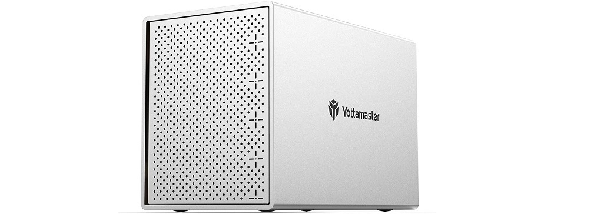

Doing Everything with Computer
Partitioning for RAID in a dual boot environment
Previously, for my developer/gaming rig, I had a setup with one barely functioning 1TB HDD and a small SSD (128GB) or something. I also had a server with another 1TB HDD, a DNS321 with 2x1TB HDD in a RAID1, and a USB3.0 HDD enclosure with a 1TB HDD in it. I also had many HDDs just sitting around from when I last used RAID more often.
I did an inventory of the drives available:
- 6 * 1 TB WD Blue
- 3 * 1 TB WD Black
- 2 * 1 TB WD Grren
- 2x Seagate Barracuda
- 1 * 128 GB SSD
The New Setup
The DNS321 works well enough, but its getting quite slow as it's showing its age. I like that I can run Linux on it, and its good enough for sync'd backups of pictures and such, but not for things like streaming videos via plex. After some benchmarking, it appears to top out at about 15Mbps which is annoying.
In comparison, the USB 3.0 HDD enclosure achieved around 150MB/sec read (1200Mbps) and 130MB/sec write (1040Mbps).
I decided since I have so many drives, I'd pickup a cheap modern RAID enclosure and opted for a 5-bay Yottamaster: https://www.amazon.com/Yottamaster-Aluminum-Enclosure-Support-Silver/dp/B071ZP2HFK to stick the WD Blues inside using a RAID5 setup.
I also decided to upgrade to a larger SSD, since I dual boot Windows and Linux and wanted to split the faster drive throughput between the two and 128GB is not enough, so I got a WD green 1TB SSD (with throughput of ~500MB/sec = 4000 Mbps).
Computer 1: developer / gaming
On this computer, I was going to use the 3X 1TB WD Black for slower storage and then split the 1TB WD Green SSD between windows and linux. I wanted to use the 3X 1TB in a software raid on each OS (The motherboard I have doesn't seem to support RAID directly). Each HDD and the SSD were essentially going to be split in half and then a partition made for each OS since it was going to be dual boot.
Computer 2: server
On this computer, I was installing Ubuntu 20.04 server, and using mdadm for a software RAID1 with the 2x Barradcudas for the /home partition. I was also going to take the 128GB SSD and use it for the root directory so that things booted and loaded faster. This was all fairly easy to do since the server version of the Ubuntu 20.04 installer includes mdadm and has a GUI for setting it up. If you need a guide, this one looks similar to what I did: Click Here
Windows 10 / Ubuntu 20.10
This was more of a beast to do. Generally I've found with dual booting, it works best if you install windows 10 first, then install Ubuntu because otherwise Windows may clobber Grub (The Linux bootloader which also detects and chain-loads the Windows bootloader).
Some things I learned :
- Make sure you have the default boot drive selected to the SSD (and not one of the RAID drives, or else Windows will install its bootloader to one of the RAID drives which will then get clobbered later)
- Windows can't create a mirrored volume with more than one disk in the disk utility tool. It also can't do this with a simple disk (it needs to use a dynamic disk, which apparently Linux can't read - this makes it difficult to have a RAID on both OS's)
- There is a thing called Storage Spaces on Windows, but it is made for full disks, not partitions, again making it difficult
- You can "attach" virtual disks VDH's to the Disk Utility and they will show up as full disks which you can then use to make a Storage Space which performs mirroring / striping.
- The attaching of VDH's is not persistent, but you can create startup tasks to do so.
How I made it work:
- Wipe all the partitions on all the disks with Ubuntu live usb to start
- Set default BIOS boot disk to SSD
- Install windows to the SSD using only half of the disk.
- Install ubuntu 20.10 to the other half of the SSD
- Make sure windows still boots
- Boot back into ubuntu. Install mdadm. Create a partition on each HDD taking half of the space. Set the type of the partition to linux RAID.
- Create the raid1 array (https://www.linuxbabe.com/linux-server/linux-software-raid-1-setup): sudo mdadm --create --verbose /dev/md0 --level=1 --raid-devices=3 /dev/sda1 /dev/sdb1 /dev/sdd1 (my SSD was /dev/sdc. Also note that I'm using the partitions, not the entire disks).
- Create the mdadm config file, update initramfs: sudo mdadm –details –scan | sudo tee –a /etc/mdadm/mdadm.conf sudo update-initramfs -u
- Add the RAID to the fstab: /dev/md0 /home ext4 defaults,nofail,discard 0 0 (first I temp mounted it to /mnt/md0 and then copied the existing /home over to it, unmounted it and rebooted and it was good)
- Booted into windows, created a simple volume on the other half of each HDD. I set the letter of each drive to the ends of the alphabet so I wouldn't get confused.
- In the disk utility, create VHD for each drive, save it on the drive, set it to dynamically grow (the other one is too slow). After these are created, they will be attached so they will show up in the Storage Spaces.
- Followed this guide to automount the VHDs Click Here
(the resulting windows drives: c: is the partition on the SSD, d: is the storage set, e: is a usb hdd, x,y,z are the partitions on the raid disks. (one of the raid disks as seen in the linux partitioner, 1st 500GB is for linux raid, second is for windows storage spaces). (the ssd disk from linux showing the windows partition + windows boot partition, the EFI boot partition and the linux partition. The only two I created were the two large partitions, the rest were created by the installers)